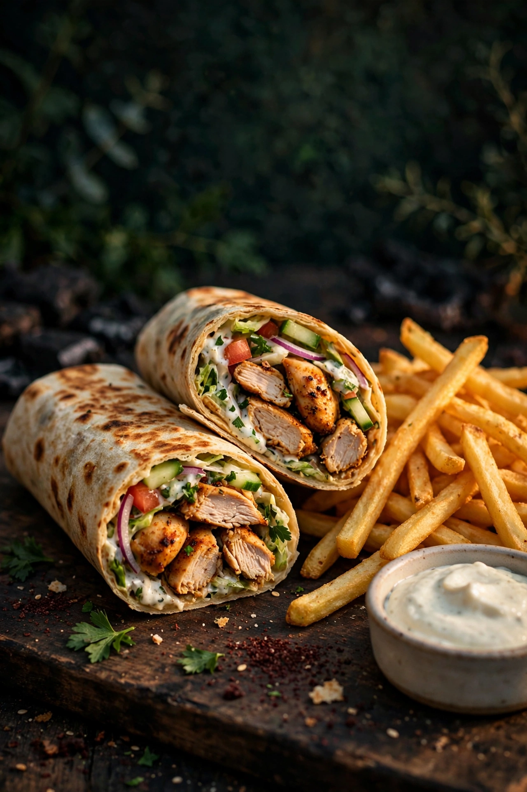
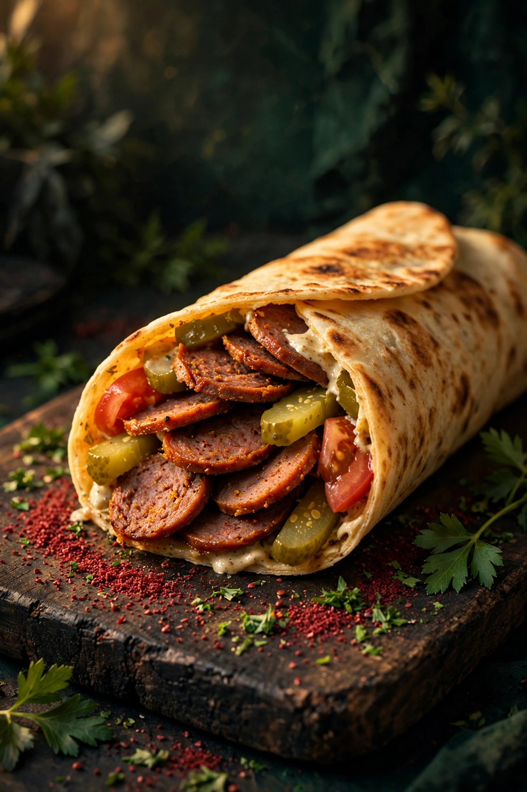
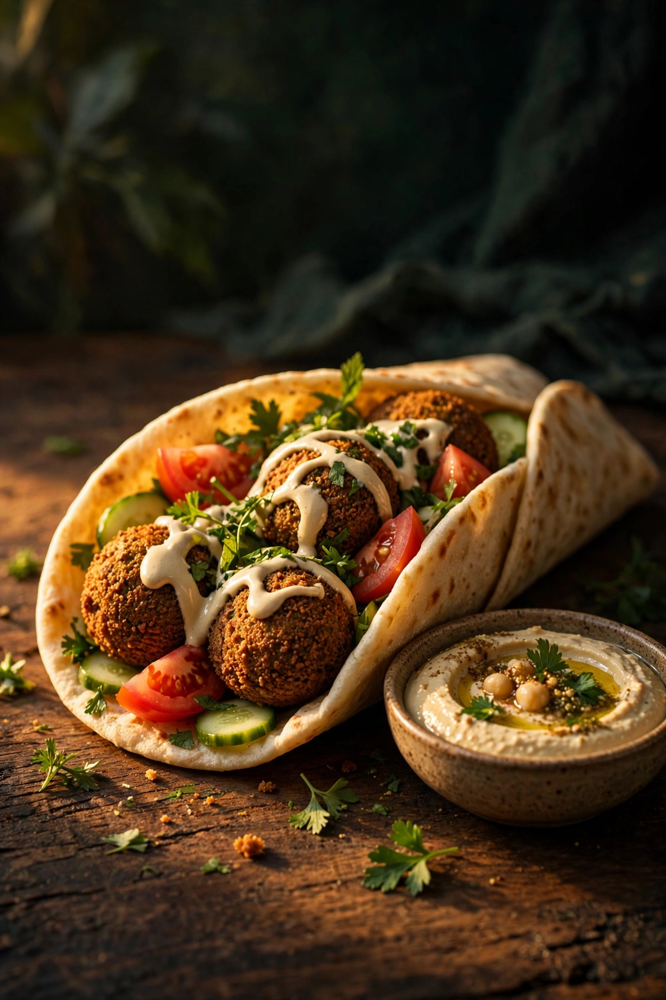
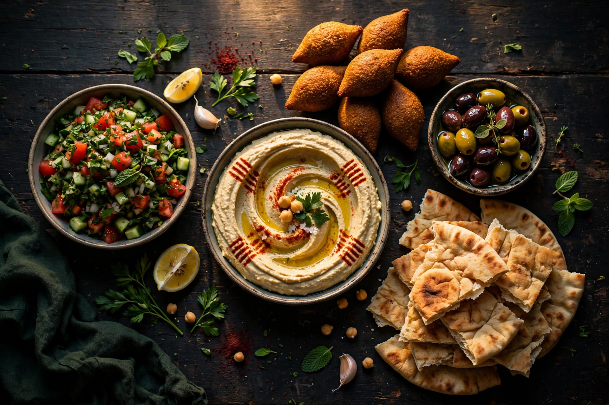

Poulet-Shawarma
Mariniertes Poulet vom Spiess, frisch geschnitten, mit Salat und Knoblauchsauce im warmen Fladenbrot, dazu knusprige Pommes.
Frisch vom Spiess: Shawarma, jeden Tag von Hand geschnitten.
Libanon, wie er auf der Strasse schmeckt: Shawarma, Falafel und Mezze, fast alles hausgemacht und grosszügig serviert, an der Bachstrasse in der Schaffhauser Altstadt.
Grosse Bestellung? Ruf kurz vorher an, dann ist alles bereit, wenn du kommst.
Vier Gerichte, die in den Bewertungen immer wieder auftauchen, vom Poulet-Shawarma bis zur Sujuk-Spezialität des Hauses.

Mariniertes Poulet vom Spiess, frisch geschnitten, mit Salat und Knoblauchsauce im warmen Fladenbrot, dazu knusprige Pommes.

Würzige Sujuk-Wurst als Shawarma, so kennen sie unsere Gäste fast nur von hier. Mit eingelegtem Gemüse und scharfer Sauce auf Wunsch.

Aussen knusprig, innen grün und saftig, aus eigener Herstellung, mit Salat, Kräutern und Tahini im Fladenbrot. Für viele Gäste die beste Falafel der Stadt.

Cremiger Hummus mit Olivenöl, dazu knusprige Kibbeh, Salat und warmes Fladenbrot. Der Teller zum Teilen und Dippen.
Rindfleisch in Scheiben, hausgemacht mariniert und geschichtet, frisch vom Spiess geschnitten.
Saftiges Rind mit geschmolzenem Käse im warmen Brot.
Süss und knusprig, und bei unseren Gästen auch als kleine Aufmerksamkeit des Hauses beliebt.
Seit 2022 dreht sich an der Bachstrasse 22 unser Spiess. Geführt wird der kleine Take-away von der Inhaberfamilie selbst: Was auf den Teller und ins Brot kommt, wird hier von Hand vorbereitet, vom Fladenbrot bis zur Falafel.
Drinnen wartet eine kleine Grotte, die unsere Gäste an die Levante erinnert: Stein, warmes Licht und wenige Tische. Und wer es eilig hat, nimmt sein Shawarma einfach mit, dafür sind wir da.
Was Gäste am meisten loben, ist die Herzlichkeit: grosszügige Portionen, eine kleine Süssigkeit als Geschenk dazu und das Gefühl, willkommen zu sein.
Über 290 Google-Bewertungen, und die allermeisten sind begeistert: Geschmack, Portionen und Gastfreundschaft werden immer wieder gelobt.
Brot, Falafel und die Rindfleischscheiben für den Spiess entstehen bei uns im Haus. Das schmeckt man, sagen unsere Gäste.
Anrufen, abholen, geniessen: Bestell am Telefon vor, besonders bei grösseren Bestellungen, dann wartet dein Essen schon auf dich.
Wer bleibt, sitzt in unserer steinernen Grotte, die an die Levante erinnert. Klein, ruhig und ganz anders als draussen.
Shawarma-Menüs für die Mittagspause, Take-away zum Vorbestellen am Telefon und ein paar Tische in der Grotte, wenn du bleiben willst.
Such dir oben in der Speisekarte aus, worauf du Lust hast.
Ein kurzer Anruf genügt. Wir sagen dir, wann dein Essen bereit ist.
Dein Essen wartet an der Bachstrasse 22 auf dich, frisch und warm.
Bleib zum Essen in der kleinen Grotte oder nimm Platz, wo es geht. Für grössere Bestellungen und Gruppen ruf am besten vorher an, dann bereiten wir alles in Ruhe vor. Am Mittag macht dich ein Shawarma-Menü mit Pommes und Getränk am schnellsten satt.
Original Beirut
Bachstrasse 22
8200 Schaffhausen
Telefon: +41 52 533 80 85
Unsere Zeiten ändern sich rund um Feiertage und Ferien. Ruf kurz an, wir sagen dir sofort, wie lange heute geöffnet ist.
Kurz anrufenGegessen wird in der kleinen Grotte oder unterwegs: Alles gibt es auch zum Mitnehmen.
Bahnhof und Altstadt sind wenige Gehminuten entfernt, ideal vor oder nach dem Rheinfall-Ausflug und einem Bummel durch die Altstadt mit dem Munot.
Am besten zu Fuss, denn die Parkplätze rund um die Bachstrasse sind begrenzt, und zu Fuss oder mit dem Velo bist du am schnellsten bei uns.